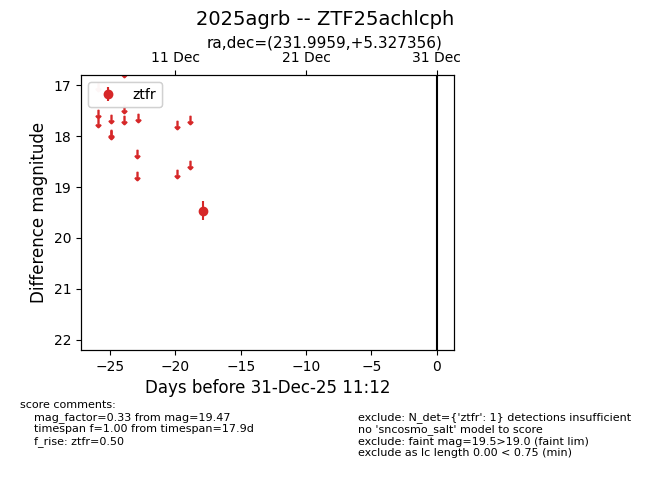
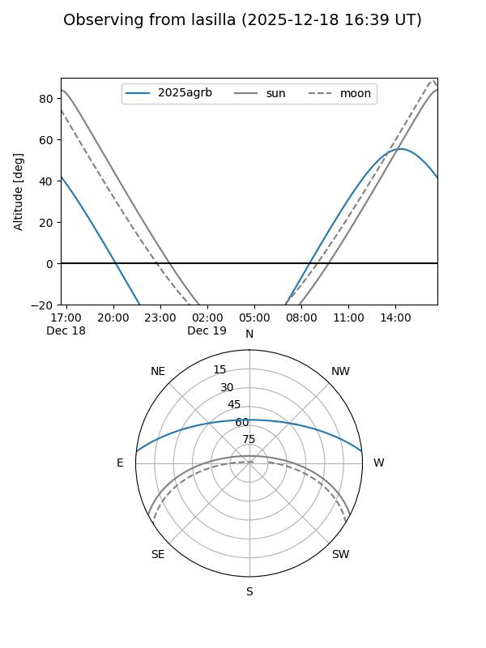
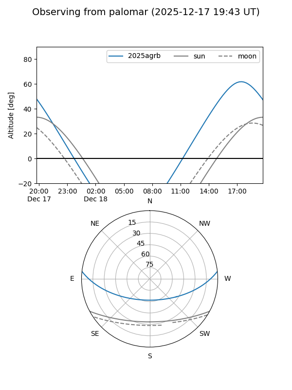

2025agrb
Target 2025agrb at 2025-12-31 18:00
Aliases and brokers:
FINK: link
Lasair: link
ALeRCE: link
TNS: link
YSE: link
alt names
ZTF25achlcph (ztf,fink_ztf)
2025agrb (tns,yse)
Coordinates:
equatorial (ra, dec) = 231.9959,+5.32736
equatorial (HMS+DMS) = 15:27:59.02,+05:19:38.48
galactic (l, b) = (9.7187,+46.85869)
Flags:
Photometry:
last ztfr=19.47
1 ztfr detections
Lightcurve

Visibility


Additional plots